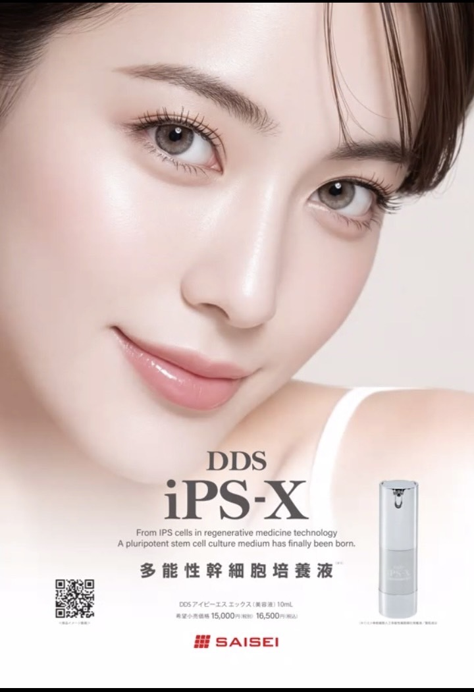
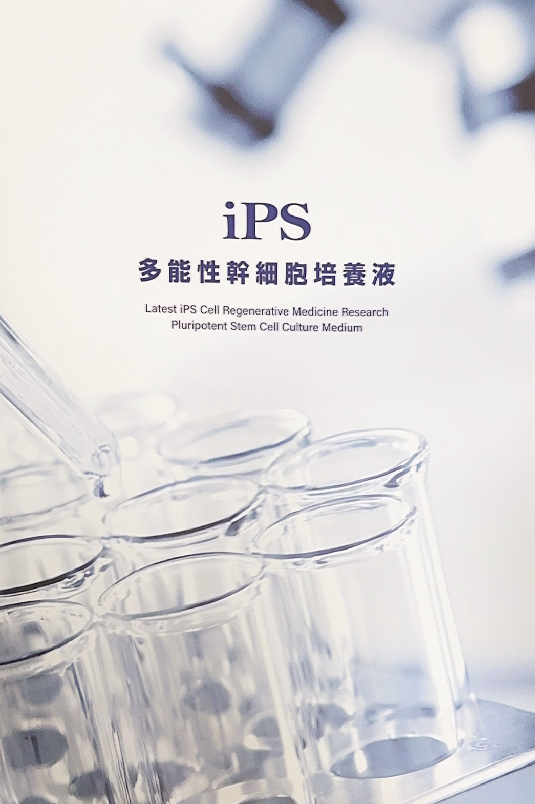
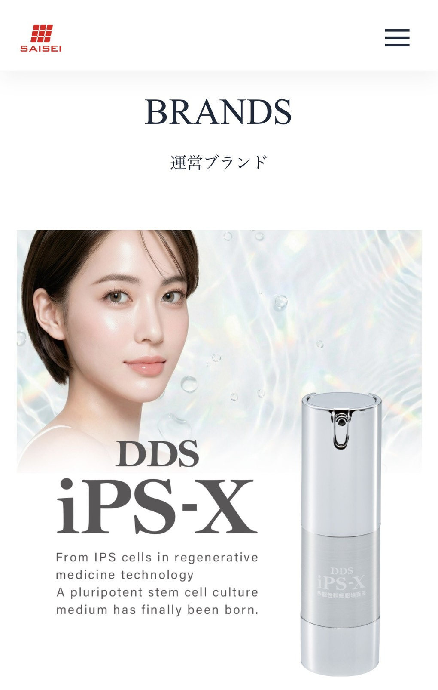

Concept
年齢のせいで
あきらめていませんか
肌本来の自己再生力に、もう一度だけ
賭けてみてください。
3つのアプローチ
再生力
肌本来の力を引き出し、
健やかなターンオーバーを
サポートします。
ハリ・弾力
内側から押し返すような、
密度感のある肌へと
導きます。
潤い
角層のすみずみまで浸透し、
潤いを長時間
閉じ込めます。

多機能幹細胞培養液
DDS iPS-X
容量 10ml
最先端のバイオテクノロジーを結集。
ヒトiPS細胞由来の培養液を贅沢に配合し、
肌の根源へ深くアプローチ。
かつてない手応えを、あなたへ。

Science & Technology
クリニック発の
バイオテクノロジー
iPS細胞（人工多能性幹細胞）の研究から
生まれた培養液技術。細胞が分泌する
サイトカインや成長因子を凝縮し、
肌本来の自己再生プロセスを
深層からサポートします。
10ml
容量
日本製
製造国
低刺激
処方
Ingredients
主要成分
ヒト単核細胞人工多能性細胞順化培養液
iPS細胞由来の培養液。肌の自己再生プロセスに働きかける最先端成分。
ヒアルロン酸Na
角層の深部まで浸透し、潤いを長時間閉じ込めるヒト型ヒアルロン酸。
加水分解コラーゲン
肌のハリを支えるコラーゲン産生をサポート。弾力のある肌土台へ。
ナイアシンアミド
くすみ・毛穴ケアに加え、肌バリア機能の強化にも働く多機能成分。
EGF様ペプチド
上皮成長因子に着想を得たペプチド。細胞レベルの活性化をサポート。
※全成分は製品パッケージをご確認ください。
For You
こんな方におすすめ
¥16,500（税込）
¥8,800 （税込）
数量限定
FAQ
よくあるご質問
どのような肌質でも使えますか？
はい。すべての肌質の方にお使いいただけるよう、低刺激処方にこだわっております。敏感肌・乾燥肌・混合肌など、肌質を問わずご使用いただけます。ご心配な場合はパッチテストをお勧めいたします。
使用するタイミングを教えてください。
洗顔後、化粧水で整えた後のお肌にご使用ください。朝晩2回のご使用をお勧めしております。クリームや乳液の前にお使いいただくことで、有効成分が浸透しやすくなります。
保存方法は？
極端に高温または低温の場所、直射日光のあたる場所を避け、常温で保管してください。開封後はなるべく早めにお使いください。
iPS細胞そのものが入っているのですか？
いいえ。DDS iPS-Xに含まれるのは、iPS細胞を培養した際に分泌される「順化培養液（コンディションドメディウム）」です。細胞そのものは含まれておりませんので、安心してご使用いただけます。
